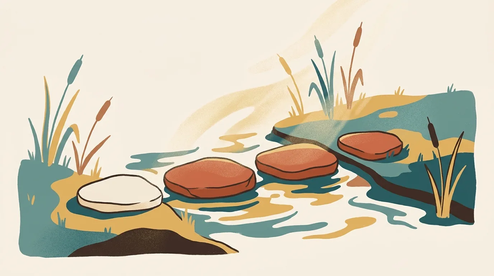
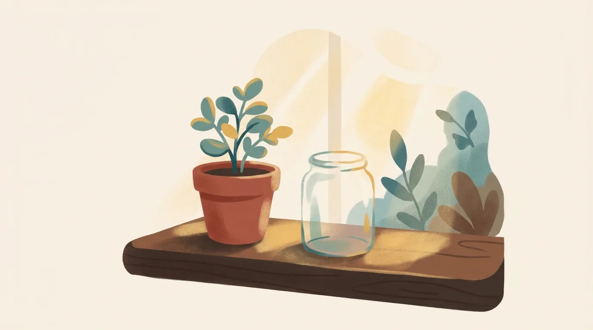

What marriage counselling costs, and what shapes it.

It is late, the house is finally quiet, and you are at the kitchen table with your phone, doing sums. The week was bad. Somewhere in it you thought, for the first time out loud, that the two of you might need help. So you searched, and every page gave you a rupee figure and a list of reasons the figure might be higher.
It is not really what you were asking. You were asking whether trying is within reach, and whether it would turn into a spend with no end.
Both are fair questions, and both have straight answers. We are going to give them without a price, because the honest number depends on you, and we would rather say it to you on a call than guess at it on a page. What we can do here is show you the whole shape of the thing, so that nothing about the money surprises you later.
How much does marriage counselling cost?
Marriage counselling cost is better understood as a course than as a session. At Famarliar it has four stages: a free call, one paid assessment, a block of at least five sessions, and then session by session for as long as it helps. Nothing is charged until you have chosen to continue, and every cost is explained on the free call before you decide.
The pages that quote a per-session figure are answering the smaller question. A single session is a unit of time. What you are deciding on is a piece of work with a beginning and an end, and the sensible thing to know before you start is what that piece of work looks like.
Here is what it looks like with us.
Why don't we put a price on this page?
Because the real number depends on things a page cannot ask you: how many sessions you are likely to need, whether one of you is starting alone, and where the two of you are starting from. So we tell you the cost on the free call, plainly, with nothing owed, and you decide afterwards.
That is not what a comparison page wants. It is what an honest conversation needs. A number on a screen tells you nothing about whether it buys three months of hard work or a year of it. Thirty minutes with us does.
The call is free and confidential. You do not have to tell us the real problem in it, and most people do not. You get a feel for the two of us, we answer whatever you want answered, money included. Then you go away and think.
What are you actually paying for?
Two counsellors in every session, who are themselves married, working with the two of you together. The assessment that shapes the first session. The block of sessions after it, spaced ten to fifteen days apart. Sessions in English, Tamil or Kannada, online or in person in Byrathi, and nothing recorded.
| Stage | What happens | What it costs |
|---|---|---|
| The first call | Thirty minutes, online or by phone. We meet, you ask what you need to ask, you decide nothing yet | Nothing |
| The assessment | You each complete the Prepare/Enrich assessment separately before session one. The report shapes that session | Paid, once |
| The first block | At least five sessions, about ten to fifteen days apart, both of us with both of you | Paid, explained on the call |
| Continuing | Session by session, for as long as it helps. Many need fewer than they feared | Paid as you go |
One thing about the first line is worth saying twice. If we are not the right people for you, we will say so on that call and point you somewhere better. It has happened, and it is a perfectly good outcome.
Why is the assessment paid, and why does it come first?
The assessment is paid once, before the first session, because without it the first two sittings are spent describing your marriage to us from scratch, which is your time and your money going on getting us up to speed. With the report in hand, the first session starts somewhere useful.
Prepare/Enrich is a structured assessment that you each complete separately, online. It shows where the two of you already agree and where your answers pull apart. It has no pass mark and gives no verdict. It is, put simply, a way of making the first paid hour count.
There is more on the assessment in what actually happens in premarital counselling, because engaged couples take the same one. For a marriage under strain it does the same job with more at stake: it finds the gaps that have been there for years and never been named.
Why a block of five sessions and not one?
Because rebuilding takes more than one sitting. A single session can only begin. Five sessions, spaced ten to fifteen days apart, give the two of you six to nine weeks in which something said in the room can be tried at home and brought back to be worked on again.
Much of the change happens in that gap, and it costs nothing. The couples who get the most from the block are the ones who treat the fortnight in between as part of the work, and not as a wait for the next appointment.
There is also a plainer reason. A marriage that has been quietly going wrong for three years does not turn in one conversation, and it would be dishonest to sell you a single session as if it might.
How many sessions will we need?
At least five after the assessment. Beyond that we cannot tell you before we have met you, and we would be wary of anyone who could. What we can say is that after the first block couples carry on session by session for as long as it helps, and many need fewer than they feared.
You will hear it from us honestly as we go. If we think the work is nearly done, we say so. If we think it needs longer, we say that too, and why. You are never committed beyond the block you are in.
What makes it cost more, and what makes it cost less?
Mostly you. In our experience the two things that most change how long the work takes are how early a couple comes and whether both of them are in the room. Everything else is smaller than either.
Coming earlier. The pattern that brought you here has had time to harden. Six months of the same argument is easier to work with than six years of it. This is not a reason to feel bad about the time already gone. It is a reason not to add more to it.
Both of you in the room. One of you can start alone, and that is a real start. We will not pretend the work goes as fast, though. A marriage is worked on by the people in it.
The fortnight between sessions. Free, and where much of it happens.
Honesty in the room. A couple who comes to win the argument in front of a referee gets very little from the hour. A couple who comes to say true things, even uncomfortable ones, gets a great deal, and usually needs fewer sessions.
Here is a pattern we see often, described as a composite rather than any real couple. She takes the free call alone, at eleven in the morning when her mother-in-law is at the temple and the house is quiet. He is on a US shift and sceptical. She does the assessment; he does it a week later, mostly to be fair. By the second session he is talking. By the fifth, the argument they have had every Sunday for two years has a name, and they have had one Sunday without it. They carry on for a few more sessions and then stop, because they no longer need us. That is the shape we hope for.
Do you have to pay for marriage counselling, or is there free help?
Private counselling is paid, ours included. Free and low-cost help does exist, and if money is the thing standing between you and talking to someone, please use it rather than wait.
- Tele-MANAS, 14416 or 1-800-891-4416. Free, 24 hours a day, run by the Government of India, in Kannada and Tamil as well as English. For the night you need to talk to someone now.
- NIMHANS Centre for Well Being in BTM Layout, part of the government institute on Hosur Road, has worked with couples. Charges are low, and there is usually a wait.
- Your church or pastor, if you belong to one. Many pastors give real time to couples, and some will sit with you for as long as it takes.
- Your employer. Some companies, especially in IT, provide a counselling benefit through an employee assistance programme. Ask HR whether a couple can use it together.
Two things need saying plainly here. If either of you is in danger, that is not a cost question. Call 112. And if you cannot pay because money in your home is not yours to spend, say so on the free call. You can take it alone, and nobody in the house will hear of it from us.
Is couples counselling covered by insurance in India?
Usually not. Health insurance in India mostly covers hospital treatment, and counselling for a marriage is not treatment of an illness. We are not aware of policies that reimburse couples counselling. Check your own policy, and ask your employer about an assistance programme, which is the more likely route.

Is marriage counselling worth the money?
We will not promise you that every marriage can be rebuilt, because that would not be honest. What we can say is that couples who still care enough to be afraid usually have more to work with than they think, and that what you leave with stays after the sessions stop.
That last part is the answer to the bottomless-spend worry. The aim of the work is a way of talking to each other that you keep. Not a counsellor you keep.
We have answered whether marriage counselling works separately, with the research and its limits.
Our own answer comes from the client side. A few years into our own marriage we hit seasons we could not have got through alone, and we were mentored through them by people who knew what they were doing. Thirteen years on we call the marriage joyful, and we still use what we were taught then. That is what we are trying to hand on, and it is the reason both of us are in the room for every session.
If you want a sense of how the work itself goes, our page on counselling for couples describes the four stages and what the first sessions are like. Couples who are still engaged, or newly married, and who would rather have a fixed price up front, can look at Marriage Ready, our six-week online course, which has its price on its own page.
Common questions
Is the first call really free? Yes. Up to thirty minutes, with nothing charged and no obligation afterwards. Plenty of people take the call and decide the timing is wrong for them. That is fine.
Do we pay for the assessment separately? Yes, once, before the first session. It is the only cost before the sessions themselves, and we tell you what it is on the call.
Can one of us start alone? Yes. Reaching out by yourself is a real place to start, and your partner does not have to be ready yet. Either of us can meet you on your own.
Can we do this in Tamil or Kannada? Yes. We counsel in English, Tamil and Kannada, and couples often say things in the language they grew up arguing in that they never quite manage in English.
Is there anything with a fixed price? For engaged couples and couples married under two years, yes: Marriage Ready, our six-week online course, has its price listed on its page. Counselling for a marriage under strain is priced on the call, because it depends on you.
Where to begin
Put the phone down and stop doing sums. The number you are trying to work out is one we will give you, plainly, in the first half hour, and nothing is owed for that half hour.
Message us on WhatsApp and we will find a time for the free call, usually within a day or two. Take it together or alone. If you would rather read first, what actually happens in the sessions describes the room, and premarital counselling for an arranged marriage is for couples with very little time.
You still care enough to be reading this at this hour. That is worth more than you think.
Written by Pradeep Mcwin (M.A., Marriage and Family Counselling) and Gomathi Mcwin (Diploma, Marriage and Family Counselling), who have practised together in Bangalore for over five years and have been married for thirteen.
This article is for information and is not a substitute for personal counselling. Every relationship is different. If something here sounds like your situation, start with a free, confidential 30-minute call.